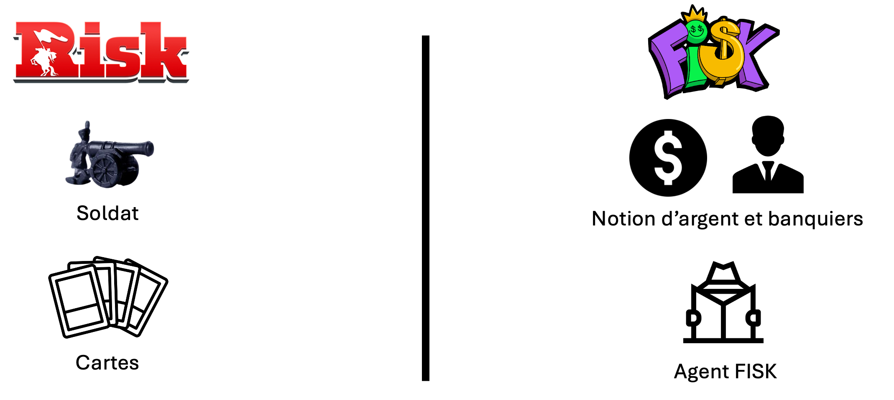

Page d'accueil
Projet d'études de 2e semestre réunissant toutes les matières en une seule SAÉ. FISK est une variante du jeu de plateau RISK.
Présentation
Vidéo présentant les aspects principaux du jeu ainsi que l'interface graphique.
Différences avec RISK
Dans FISK, il y a une notion d'argent qui permet plusieurs choses :
Recruter des banquiers, placer de l'argent ainsi que payer un pot de vin à l'agent FISK.
Pour plus d'informations, veuillez consulter les règles du jeu.